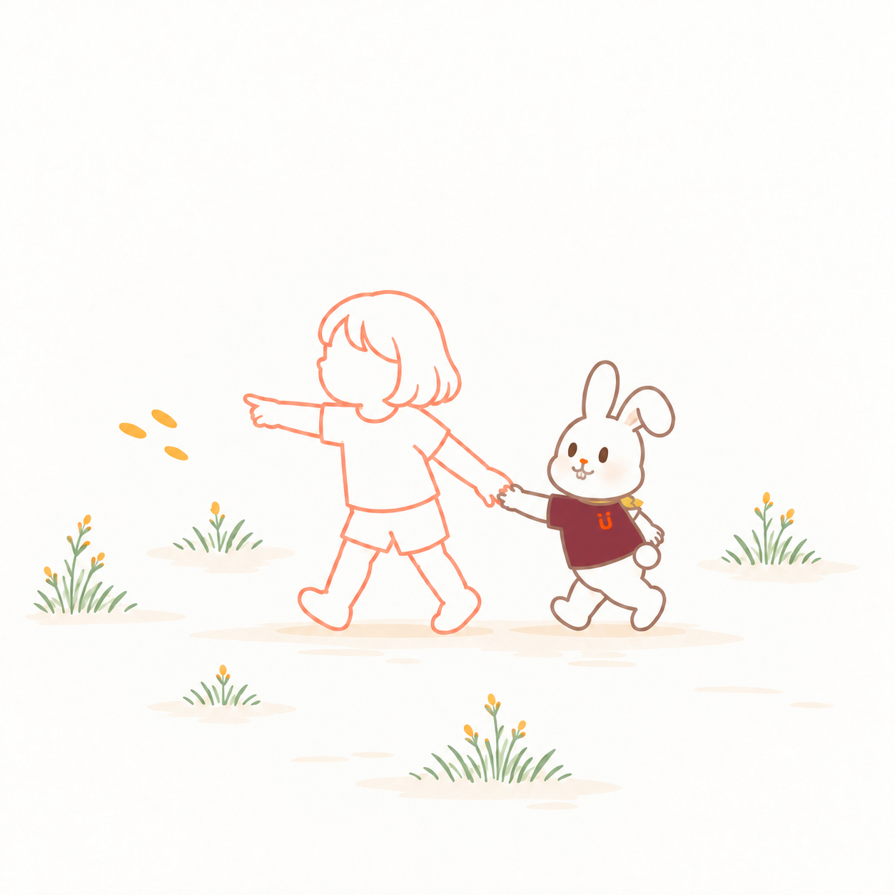

01
からだを 動かして、
あそぶのが だいすき。
ころころ、ボールが きた！
きみと あそぶと、ぼくも わくわく。
「やってみたい」を 見つけると、
つい、はりきっちゃう。

02
あっ。
ぼくだけ、先に。
階段を おりるとき。
ぼくは 先に 進んだけれど、
きみは、足を 出そうとして いる。
いそがなくて いいよ。
どこが むずかしいかな。

03
動きを 見て、
支え方を 考える。
片足を 動かすとき、
からだは どう 動くかな。
手すりの 高さ。段の 高さ。
どんな 支えが あると よいか、
おうちの人と いっしょに 考える。
支えられるかな。手すりは、
つかみやすいかな。
04
手を 添えたら、
どうかな。
きみが 手を 添えやすい 台を、
いっしょに 選ぼう。
ぼくも となりで、からだを くるり。
あ、きみも 向けたね。
この 支えが あると、どう？
動きやすさは 変わるかな。

05
ここで、ひとやすみ。
たくさん 動いたら、ひと息。
ぼくも、となりに 座ろう。
「もうすこし」より、
いまの きみの 様子を 見よう。
すこし 休もうか。

06
きみの「行きたい」、
いっしょに。
きみが 指さす、その先へ。
今度は、きみの 歩幅で。
支えを 借りても、休みながらでも。
いっしょに 行ける 方法を、
ぼくは 見つけたい。
おはなしの あとに
その子の「行きたい」を、
いっしょに。
Genは、子どもと身体を動かすことが大好き。つい先に進んでしまう、はりきり屋です。でも、いちばんうれしいのは、その子と一緒に「楽しかったね」と笑い合うこと。
「転ばないかな」「一緒に遊べるかな」。そんな心配にも寄り添いながら、理学療法士の視点で、身体の支え方やバランス、疲れやすさを見ます。支えやあそび方を工夫して、動きやすくなったかを家族と確かめます。
支えを借りても、途中で休んでも。「行きたい」「やってみたい」を大切に、その子に合う方法を探します。「今日は、ここまで来られたね」。そんな喜びを、子どもとも、おうちの人とも分かち合っていきたいのです。
この物語は、階段の練習手順を示すものではありません。必要な支え方は、その子に合わせて専門職と確かめます。
参考：APCP：小児理学療法／NHS：階段が難しい子どもへの支援
HugMap Stories · Genの自己紹介